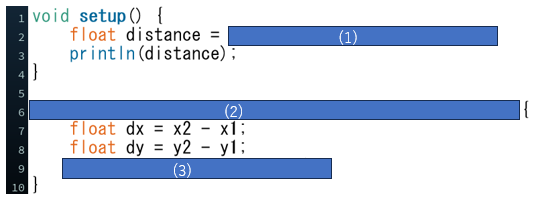

問題のコード
プログラム実行画面
問題文
上図は,2点間の距離を計算するプログラムです.
(1)導入したcaluculate関数を使って,点(10, 40)と点(100, 220)の距離を求めるプログラムを埋めてください.
(2)浮動小数点数型の４つのパラメータx1,y1,x2,y2を使ってcalculate関数を導入してください.
(3)sqrt(dx*dx + dy*dy);の値を返すプログラムを埋めてください.
(2)(3)値を返す関数を導入するには以下のように記述する.
関数が返す値のデータ型 関数名(パラメータ){
関数内のコードとreturn文
}
解答欄
解説欄